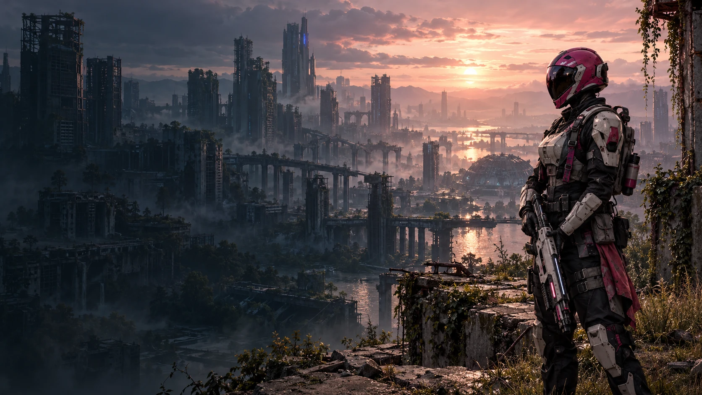
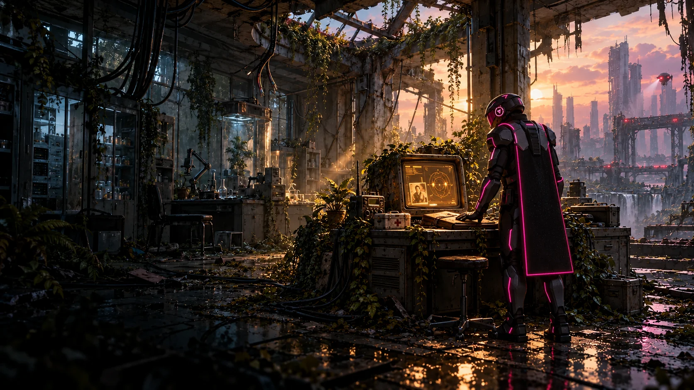

Les anciens ordinateurs ont gardé les dernières traces des humains.
Retrouver l’autre. Traverser les ruines.
GHJU, soldate de l’univers rose. Armes et armures évoluent à chaque niveau.
Laboratoire abandonné, rue sous surveillance et relais en hauteur. Une trace de votre famille.
Ouvrez Pink War en ligne dans Safari : Jouer à Pink War.
+ GRATUIT · SANS INSTALLATION · TACTILE & CLAVIER
Choisissez LYLU ou sa sœur GHJU sur l’accueil. En Histoire, une sonde et un gardien occupent déjà le secteur. Le niveau 1 vous mène au laboratoire : rétablissez le courant, consultez l’archive humaine, repoussez deux patrouilles de machines puis rejoignez le relais en hauteur. Suivez les repères ambre et les écrans du décor. F, le bouton contextuel ou le clic du joystick libre sur Quest permettent d’interagir. Le mode Survie propose vingt vagues et six armes.
Déplacez votre personnage avec le joystick.
Tirez ou chargez votre arme. ↻ recharge la batterie ; ≡ ouvre l’arsenal.
Orientez la caméra et ajustez votre visée.
SUR ORDINATEUR ZQSD ou WASD pour se déplacer · Flèches ou glisser pour viser · Clic gauche ou Espace pour tirer · Clic droit pour viser / parader · J ou Y sur manette classique pour sauter · Maj pour courir · C ou R3 pour s’accroupir / se relever · R pour recharger · E pour changer d’arme · F pour interagir / récupérer · V pour changer de vue · Échap pour la pause.
À COUVERT Les murs arrêtent les coups et les projectiles. Après 5 secondes sans dégât, votre santé se régénère. En mode Survie, les armes apparaissent dans un faisceau lumineux aux niveaux 2, 3, 5, 7 et 9 : approchez-vous puis appuyez sur F, X sur manette, ou sur le bouton de récupération. Vous pouvez les ignorer. LANCE remplace le tir à dispersion : un projectile précis par pression, cinq cellules et une visée grossissante hors casque. BLOOM possède un viseur ×2, LANCE une lunette ×4. Sur Quest, maintenez la gâchette gauche et regardez dans l’optique avec l’œil de la main de tir : la lentille grossit la cible. Tirez à droite et rechargez avec A. Hors casque, maintenez le clic droit ou le bouton de visée pour zoomer ; les mouvements deviennent plus fins. THORN et NOVA chargent leurs tirs ; maintenez pour la pleine puissance. Votre tenue reçoit aussi de nouvelles pièces à chaque niveau : le bouton Tenue permet de voir votre armure et les prochaines évolutions.
AURORA Au niveau 2, récupérez le sabre à énergie. Maintenir la gâchette de tir allume la lame ; relâcher la rétracte. Ses mouvements produisent un bourdonnement et des sons de coupe. Tirez pour couper sur PC/mobile ; en VR, déplacez réellement la lame. Maintenez la commande de visée pour parer un tir sur la lame. Énergie continue, sans recharge.
DOUBLE SAUT ↑ sur tactile, J sur PC, Y sur manette classique, X sur Quest (A si main de tir gauche). Un second appui en l’air donne une impulsion supplémentaire ; près d’un mur, il permet de rebondir. En VR classique, vous pouvez aussi pointer et sélectionner le bouton ↑ au poignet libre.
SONDES VOLANTES Une S-03 arrive au premier niveau narratif. En Survie, les sondes apparaissent à partir de la troisième vague et survolent les rues et les terrasses. Leur iris charge avant le tir : déplacez-vous, accroupissez-vous ou cherchez un abri. Visez l’iris pour un coup critique, ou les propulseurs pour les ralentir.
Voir les personnages originaux et leurs armures ↗
LOCALISER LES BRÈCHES Le petit point en haut indique leur direction. Un point creux annonce une brèche en formation ; le petit chevron indique qu’elle est derrière vous. Le repère suit aussi votre regard dans le casque.
PRENDRE DE LA HAUTEUR Dans la campagne, le relais nord se rejoint par son escalier ou son ascenseur à 4,8 m. En Survie, à l’ouest, les Archives végétales culminent à 4,8 m ; à l’est, le Relais des machines à 7,2 m. Suivez les rampes métalliques ou montez sur un ascenseur automatique : il attend quatre secondes à chaque étage. La passerelle centrale reste accessible. Les panneaux sont placés dans le monde.
Sur iPhone, le mode paysage offre la meilleure vue. Vous pouvez ajouter le jeu à l’écran d’accueil depuis Safari.
ORDRE, l’intelligence artificielle qui administrait Vesper, a retourné les infrastructures contre les humains. Les portes de transfert acheminent désormais ses machines de guerre.
GHJU et LYLU sont frère et sœur, anciens membres des équipes de secours. Séparés pendant la chute du monde, ils ont adapté leurs tenues de pompier pour survivre : casque rose pour GHJU, bleu pour LYLU.
Plusieurs années après la guerre, la végétation reprend les rues. Les installations encore actives restent sous le contrôle d’une IA entièrement hostile. Seuls les ordinateurs isolés de l’ancien réseau conservent des indices fiables laissés par des humains.
NIVEAU 1 / LE LABORATOIRERétablissez l’alimentation locale, consultez le terminal d’archives et cherchez la trace de votre frère ou de votre sœur. Une sonde d’ORDRE veille au loin.
LES ANCIENS RELAISLes escaliers et les ascenseurs mènent aux installations en hauteur. Après le combat, rejoignez le relais des archives végétales.
Un premier niveau complet à essayer. La campagne s’arrête à son bilan ; les chapitres suivants seront construits pas à pas.
Les réglages sont conservés sur cet appareil.
Les brèches sont stabilisées pendant la pause.
Sur tactile : joystick gauche = déplacement, joystick droit = vue, ↑ saut / second appui en l’air, ↓ accroupi, ↻ recharge, ◎ tir.
La brèche a gagné cette bataille. La prochaine est à vous.
RECORD PERSONNEL 0
Tenue tactique nacrée.
Chaque niveau ajoute de nouvelles pièces. Les aperçus des niveaux suivants ne changent pas votre tenue en combat.
Les armes arrivent au fil des niveaux. Chaque batterie fournit un nombre de tirs, puis se recharge.
Recherche d’un casque compatible…
La manette de tir se tient comme un pistolet : le canon suit votre main et la gâchette tire. Les doigts du gant suivent les gâchettes et la poignée. En Quest, la gâchette libre vise ; A ou X sur la main de tir recharge à la verticale. X saute sur Quest (A si main de tir gauche), Y sur manette classique et ↑ sur tactile. Le second appui donne le double saut ou le rebond mural. Le bouton ↑ au poignet libre se sélectionne avec la gâchette de la main de tir. Une charge partielle de THORN/NOVA est relâchée en lâchant la gâchette ; une charge complète part automatiquement. Le tir est bloqué pendant la recharge. En pause ou en fin de partie : A reprend, rejoue ou lance la survie après la campagne ; B quitte la VR (X et Y avec une main de tir gauche). Les boutons système Meta restent ceux du casque. Les réglages sont conservés sur ce casque.
Sur iPhone, utilisez la vue à deux yeux en paysage avec un support VR pour téléphone. L’orientation par les capteurs demande votre accord ; les joysticks et une manette Bluetooth restent disponibles. Avec une manette standard : RT/R2 tire, LT/L2 vise avec grossissement, Y/triangle saute, X/carré récupère l’arme proche, A recharge, B change d’arme et Menu met en pause.
Relancez le jeu en mode compatible.